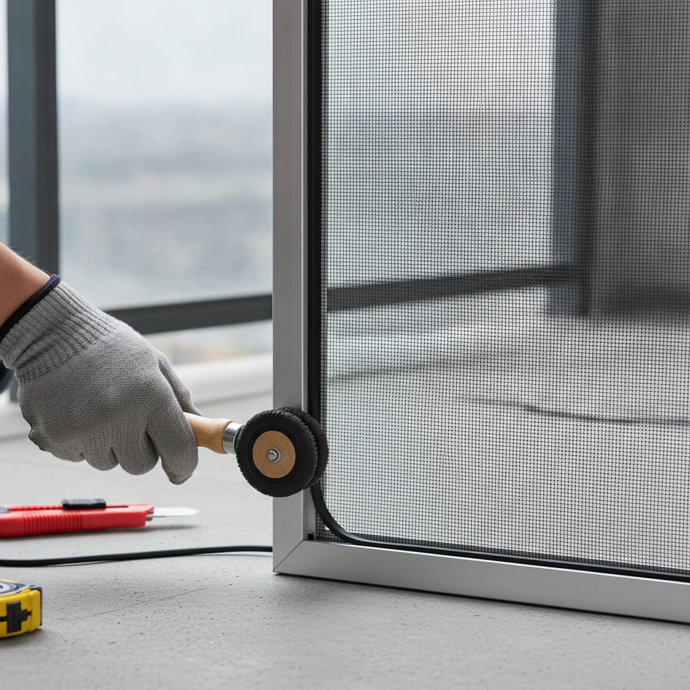
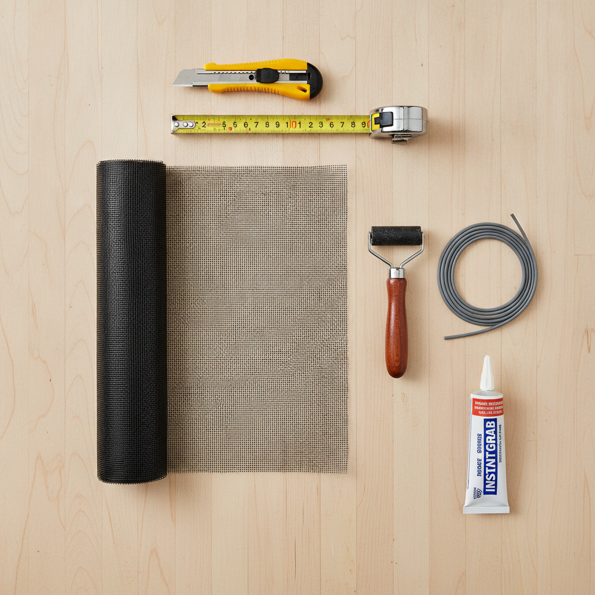

방충망 교체 셀프 vs 업체 비용 비교 — 망 종류별 단가 계산표와 창문 규격 실측 체크리스트
아파트나 빌라에 거주하면서 3~5년 이상 지나 삭아버린 방충망은 환기할 때마다 유해한 미세 금속 가루를 날리고 초파리나 모기 같은 미세 날벌레의 무단 침입 경로가 됩니다. 방충망을 교체할 때 셀프 DIY 시공 시 창문 1개당 자재비는 약 5천 원~1만 2천 원에 불과하지만, 전문 시공 업체를 부를 경우 창문 크기에 따라 개당 4만 원에서 8만 원 안팎의 견적이 발생합니다.
방 1~2칸의 작은 창은 누구나 전용 롤러와 고무 가스켓으로 손쉽게 셀프 교체가 가능하지만, 30평대 아파트 전체(베란다 대형창 5~8개)를 한 번에 교체할 때는 탈거 위험성과 시공 완성도를 감안해 업체를 부르는 것이 효율적일 수 있습니다.
알루미늄망 vs 모노필라멘트 미세망 재질별 단가 비교표와 셀프 vs 업체 비용 계산표, 그리고 창틀 규격 실측 팁을 체크리스트로 확인해 보세요.

창틀 홈에 롤러로 고무 가스켓을 밀어 넣어 미세 방충망을 팽팽하게 고정하는 셀프 시공 작업 / AI 제작 이미지
01 | 낡고 삭은 방충망이 초래하는 미세 날벌레 유입과 추락 안전사고 위험
신축 입주 시 기본 설치되는 은색 알루미늄 방충망은 비바람과 자외선에 장기간 노출되면 부식되면서 산화 피막이 벗겨집니다. 3~4년이 지나면 검은 가루가 묻어나며 충격에 과자처럼 쉽게 부스러집니다.
또한 기존 알루미늄망은 망 눈의 크기가 16~18메시(Mesh, 1인치 안의 구멍 수)로 비교적 넓어, 여름철 모기뿐 아니라 환절기 불빛을 보고 달려드는 하루살이나 깔따구, 초파리 같은 1mm 안팎의 미세 해충을 전혀 막지 못합니다.
더욱이 삭은 방충망은 어린이나 반려동물이 기대었을 때 망이 통째로 찢어지거나 프레임에서 이탈하여 치명적인 고층 추락 사고로 이어질 위험이 매우 큽니다. 따라서 손가락으로 가볍게 눌렀을 때 탄력이 없고 바스러진다면 즉시 교체해야 합니다.
02 | 방충망 재질별(알루미늄 vs 모노필라멘트 미세망 vs 스테인리스) 장단점과 수명
교체에 앞서 시중에 유통되는 세 가지 주요 방충망 자재의 특성을 정확히 비교하고 주거 환경에 알맞은 망을 선택해야 합니다.
알루미늄 방충망 (16~18메시) : 가격이 가장 저렴하고 통기성이 뛰어나지만 수명이 3~5년으로 짧고 쉽게 삭아 부식 분진이 발생하는 치명적 단점이 있습니다.
모노필라멘트 미세 방충망 (30~32메시) : 낚싯줄에 쓰이는 고강도 특수 섬유로 제작되어 10년 이상 부식이 전혀 없고, 0.5mm 이하의 초미세 날벌레를 99% 완벽 차단합니다. 겉은 검은색이지만 실내에서 밖을 볼 때 시야가 매우 투명하고 오염물이 빗물에 씻겨 내려가는 자정 작용이 있어 현재 가장 인기 있는 대세 자재입니다.
스테인리스 방충망 (22~30메시) : 칼로도 찢어지지 않는 최강의 내구성을 지녀 도둑 침입 방지 및 대형견 추락 방지 안전망으로 쓰입니다. 영구적인 수명을 자랑하지만 자재 무게가 무겁고 가격이 가장 고가입니다.
03 | 셀프 DIY 시공 vs 전문 업체 시공 창문 규격별(소·중·대창) 비용 비교표
창문 크기별로 셀프로 직접 교체할 때와 전문 시공 업체를 불러 교체할 때의 비용 차이를 명확히 비교해 드립니다.
| 창문 규격 구분 |
일반적인 창문 치수 |
셀프 DIY 자재비 (미세망 기준) |
전문 업체 시공 견적 (1창당) |
비용 절감 효과 |
| 소형 창 (화장실·주방) |
가로 50cm × 세로 60cm 안팎 |
약 3,000원 ~ 5,000원 |
30,000원 ~ 40,000원 |
창당 약 3만 원 절감 |
| 중형 창 (작은방·침실) |
가로 90cm × 세로 120cm 안팎 |
약 6,000원 ~ 8,000원 |
45,000원 ~ 55,000원 |
창당 약 4만 원 절감 |
| 대형 창 (거실·베란다) |
가로 110cm × 세로 210cm 안팎 |
약 10,000원 ~ 14,000원 |
65,000원 ~ 80,000원 |
창당 약 6만 원 절감 |
| 30평대 전체 (대5 + 중2) |
총 7개 창호 일괄 교체 |
약 60,000원 ~ 80,000원 (공구 포함) |
350,000원 ~ 450,000원 |
총 30만 원 이상 절감 |
위 비교표에서 볼 수 있듯이 전체 창호를 셀프로 직접 교체하면 최소 30만 원 이상의 가계 지출을 절약할 수 있습니다. 다만 거실 베란다 대형창은 높이가 2m가 넘어 프레임이 휘어지기 쉬우므로 2인 1조 작업이 권장됩니다.

방충망 셀프 교체에 필요한 미세망 롤과 롤러, 고무 오치가스켓 등 기본 공구 세트 / AI 제작 이미지
04 | 오차 없는 시공을 위한 방충망 창틀 가로·세로 규격 정밀 실측법
자재를 인터넷으로 주문하기 전 창틀 규격을 잘못 측정하면 망이 모자라거나 자재 낭비가 발생하므로 정확한 실측이 필수적입니다.
줄자를 이용해 방충망 프레임의 바깥쪽 외경(외곽 테두리 끝에서 끝)을 측정합니다. 가로와 세로 길이를 잰 뒤, 실제 주문할 때는 창틀 홈 안으로 망을 밀어 넣고 여유분을 잘라내야 하므로 가로와 세로 각각 최소 10~15cm 이상 여유를 두고 주문해야 합니다.
예를 들어 창틀 외경이 가로 90cm, 세로 120cm라면 망은 가로 100cm(폭 규격), 세로 140cm 이상으로 재단 주문하는 것이 초보자의 실패를 막는 정석입니다.
05 | 셀프 교체에 필요한 필수 공구(밀대 롤러·고무 오치 가스켓·본드)와 자재비 예산
셀프 시공을 위해 필요한 공구는 시중 철물점이나 인터넷 DIY 쇼핑몰에서 만 원 미만의 저렴한 세트로 구입할 수 있습니다.
1. 방충망 롤러 (밀대) : 홈에 고무 가스켓을 부드럽게 밀어 넣는 필수 공구 (약 1,500원 ~ 3,000원)
2. 고무 오치가스켓 (스플라인) : 망을 홈에 꽉 물어주는 원형 고무줄입니다. 기존 가스켓 두께(보통 4.5mm~6.5mm)를 미리 잘라 단면 굵기를 확인한 후 동일 규격을 주문해야 합니다 (미터당 약 200~300원)
3. 순간접착제 / 록타이트 : 모노필라멘트 미세망은 섬유 재질 특성상 고무줄을 넣은 후 모서리와 테두리에 접착제를 도포해 고정력을 극대화합니다 (약 2,000원)
4. 커터칼과 가위 : 작업 후 남은 자투리 망을 깔끔하게 절단하는 용도입니다.
06 | 초보자도 30분 만에 끝내는 방충망 분리·망 고정·가스켓 삽입 5단계 순서
복잡한 기술 없이 아래 5단계 순서만 지키면 주부나 초보자도 30분 만에 팽팽한 새 방충망을 완성할 수 있습니다.
· 1단계 (기존 망 철거) : 창틀을 떼어내 바닥에 눕힌 뒤, 송곳이나 일자 드라이버로 낡은 고무 가스켓을 들어 올려 기존 망과 함께 뜯어냅니다. 홈에 낀 먼지를 솔로 깨끗이 청소합니다.
· 2단계 (새 망 재단 및 임시 고정) : 창틀 위에 새 망을 펼쳐놓고 상하좌우 5cm 이상 여유를 둡니다. 집게나 테이프로 한쪽을 가볍게 집어두면 작업 중 망이 틀어지지 않습니다.
· 3단계 (고무 가스켓 삽입) : 'ㄱ'자 모서리부터 시작하여 롤러 휠로 고무 가스켓을 홈 안으로 꾹꾹 눌러 밀어 넣습니다. 이때 반대편 망을 너무 세게 당기면 프레임이 안쪽으로 휠 수 있으니 손바닥으로 가볍게 평평하게만 펴주며 진행합니다.
· 4단계 (순간접착제 도포) : 4면의 가스켓 삽입이 끝나면, 망이 빠지지 않도록 가스켓 안쪽 테두리를 따라 순간접착제를 10~15cm 간격으로 점점이 도포해 경화시킵니다.
· 5단계 (자투리 절단) : 접착제가 마른 후 새 커터칼날을 창틀 바깥쪽 면에 비스듬히 대고 남은 자투리 망을 일직선으로 반듯하게 잘라내면 완성됩니다.
07 | 아파트 고층 방충망 탈거 시 추락 방지 안전 수칙과 실내 작업 요령
셀프 교체 작업 중 가장 위험한 순간은 바로 창틀에서 방충망 프레임을 떼어내고 다시 끼우는 탈거 및 장착 과정입니다.
아파트 10층 이상의 고층 세대에서는 외부 바람에 의해 프레임을 놓치면 대형 낙하 참사로 이어질 수 있습니다. 방충망을 탈거할 때는 몸을 창밖으로 절대 내밀지 말고, 창틀 아래쪽을 먼저 위로 번쩍 들어 올려 하부 레일에서 바퀴를 뺀 뒤 실내 쪽으로 비스듬히 기울여 완전히 방 안으로 들여와야 합니다.
방충망 상단에 '이탈 방지 안전핀(플라스틱 스토퍼)'이 나사로 고정되어 있는 창호는 십자드라이버로 안전핀 나사를 먼저 풀어 느슨하게 내려주어야 프레임이 부드럽게 빠집니다.
08 | 물구멍 방충망 테이프와 모헤어(털 가스켓) 교체로 완성하는 완벽 밀폐법
망을 아무리 촘촘한 미세망으로 교체해도 벌레가 계속 들어온다면 십중팔구 창틀 물구멍과 삭은 모헤어 때문입니다.
창문 샷시 하단 레일에는 빗물 배수를 위한 작은 타원형 물구멍이 뚫려 있는데, 이곳은 바깥의 날벌레와 바퀴벌레가 실내로 침투하는 고속도로입니다. 다이소나 인터넷에서 판매하는 '물구멍 방충망 방충 스티커(1,000원)'를 사서 창틀 하부 모든 물구멍에 반드시 부착해야 합니다.
또한 방충망 프레임 옆면에 붙어 창문 유리와의 틈새를 막아주는 털 가스켓(모헤어)이 닳아서 털이 빠져 있다면, 새 모헤어(길이 9~12mm)를 레일에 끼워 넣어 주어야 옆구리로 새어 들어오는 벌레와 외풍을 완벽하게 차단할 수 있습니다.
09 | 방충망 교체 방식 선택과 실패 없는 셀프 시공 마감 체크리스트
나의 상황에 맞는 교체 방식 선택 요령과 최종 점검 사항을 체크리스트로 정리합니다.
🛠️ 셀프 vs 업체 선택 기준 가이드
· 작은방·화장실 창문 1~3개 교체 : 무조건 셀프 DIY 추천 (2~3만 원으로 1시간 내 완료 가능)
· 거실 베란다 대형창 포함 집 전체 교체 : 전문 업체 견적 추천 (대형창 탈거 안전사고 예방 및 1일 일괄 완료)
· 어린이·고양이 거주 고층 세대 : 스테인리스 안전 추락방지망 전문 시공 필수 (하중 500kg 이상 지탱)
💡 셀프 시공 마감 4대 체크리스트
1. 프레임 휨 방지 : 망을 너무 세게 당기며 가스켓을 넣으면 창틀이 활처럼 휘어 레일에 안 맞으니 가볍게 펴기만 하세요.
2. 기존 가스켓 두께 확인 : 가스켓이 너무 굵으면 홈에 안 들어가고, 너무 얇으면 망이 빠지니 기존 것과 굵기를 대조하세요.
3. 물구멍 차단 스티커 부착 : 창문 하단 빗물 배수 구멍마다 방충망 테이프를 붙였는지 전수 점검하세요.
4. 레일 하부 롤러 작동 점검 : 창틀을 다시 끼운 뒤 방충망이 덜컹거리지 않고 부드럽게 열리고 닫히는지 확인하세요.
#방충망교체비용
#방충망셀프교체
#방충망업체비용비교
#미세방충망가격
#모노필라멘트방충망
#방충망치수재는법
#창문방충망탈거방법
#창틀물구멍스티커
#방충망모헤어교체
#셀프집수리체크리스트